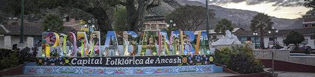

La provincia de Pomabamba es una de las veinte que conforman el departamento de Áncash en el perú. Danzas tipicas de Pomambamba son aquellas que siguen alegrando,principalmente,las fiestas patronales de los diversos pueblos de la provincia Pomabamba. |
|  |
Solo en la provincia ancashina de Pomabamba se cultivan 36 danzas folclòrica,hecho le ha valido el titulo honorifico de folclòrica de la regiòn Àncash, mediante la Resoluciòn Regional |